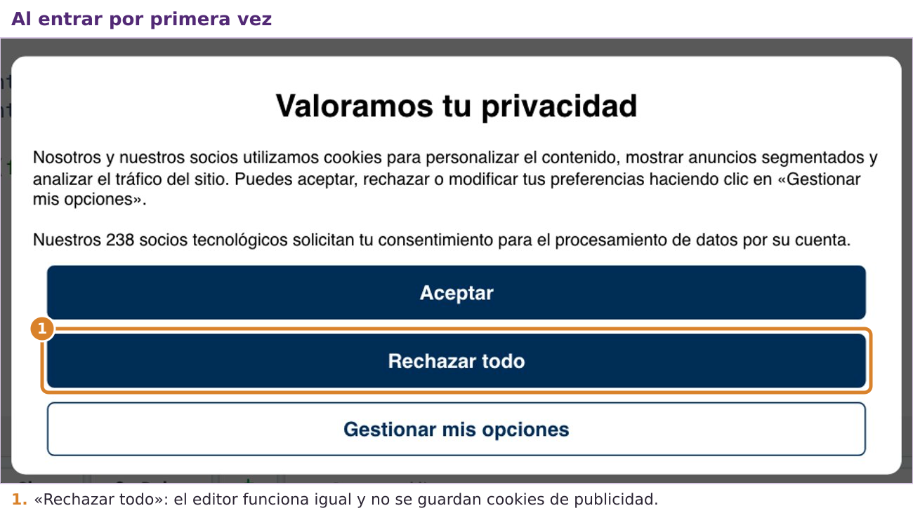
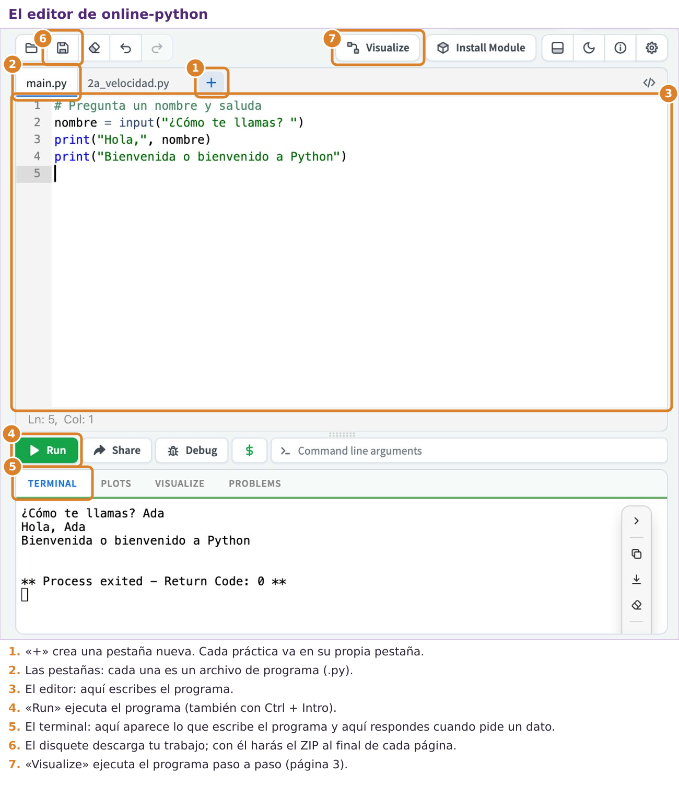
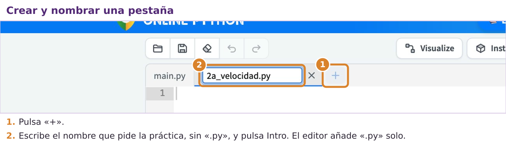
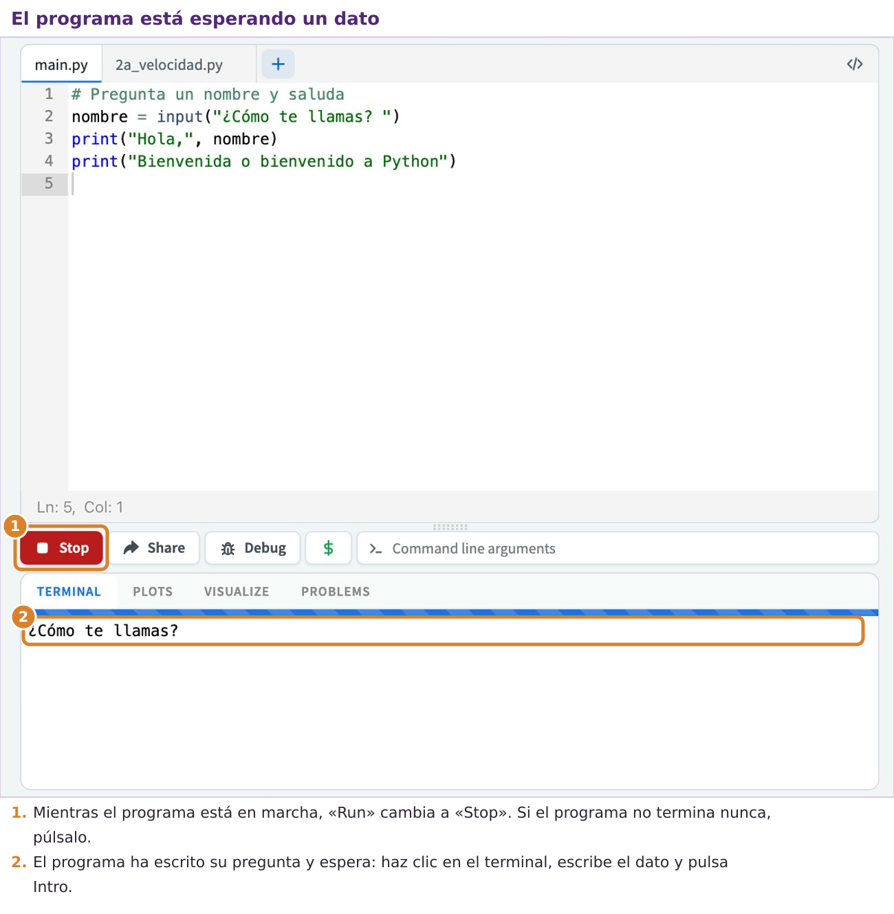
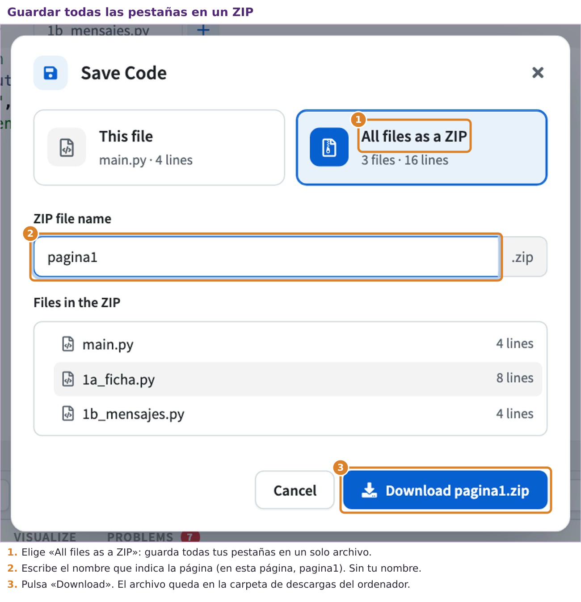
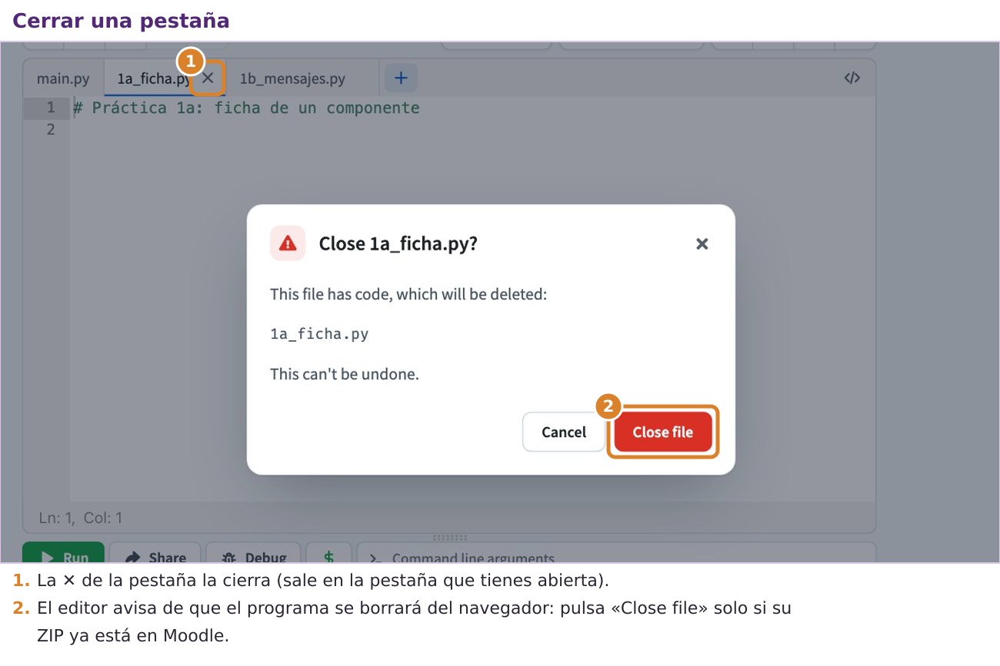
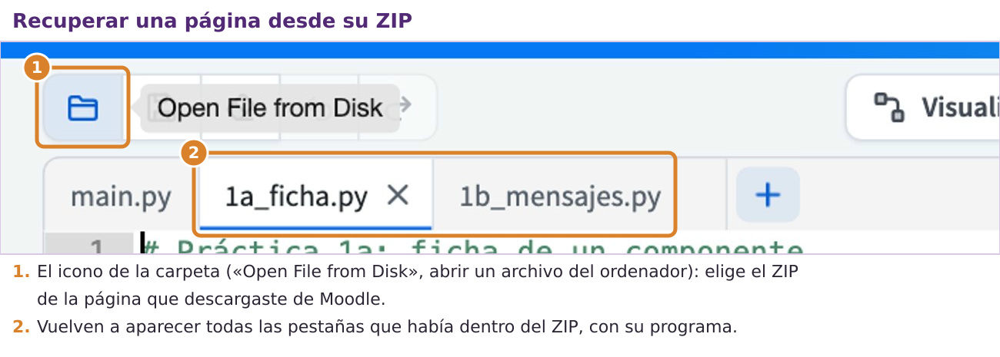

Qué vas a aprender en esta página
- qué es un programa y cómo lo ejecuta el ordenador;
- a manejar online-python: crear pestañas, escribir un programa, ejecutarlo y leer el resultado;
- tus dos primeras instrucciones:
print, para escribir en pantalla, einput, para pedir datos; - qué hacer cuando aparece un mensaje de error.
Qué es un programa
Un programa es una lista de instrucciones escritas en un lenguaje que el ordenador entiende, en nuestro caso Python. El ordenador las ejecuta una detrás de otra, de arriba abajo, igual que tú seguirías los pasos de una receta. Hay una diferencia importante: el ordenador no adivina lo que querías decir. Hace exactamente lo que está escrito, ni más ni menos. Por eso un pequeño error, como olvidar un paréntesis, impide que el programa funcione.
Casi todos los programas de esta unidad tienen la misma estructura en tres partes:
| Parte | Qué es | Ejemplo: convertir una velocidad |
|---|---|---|
| Entrada | los datos que el programa necesita, que normalmente escribe el usuario | la velocidad en km/h |
| Proceso | los cálculos que hace el programa con esos datos | dividir entre 3,6 |
| Salida | el resultado que el programa muestra en pantalla | la velocidad en m/s |
Conoce el editor
Abre online-python.com en una pestaña nueva del navegador. La primera vez aparece un aviso sobre cookies (pequeños archivos que las webs guardan en tu navegador). Pulsa Rechazar todo: la página funciona igual y no guarda datos para publicidad.

Esta es la pantalla de trabajo. Fíjate en las partes numeradas: las usarás todo el tiempo.

La página también muestra anuncios. No forman parte del editor: no hagas clic en ellos.
Crear una pestaña para cada práctica
Cada práctica va en su propia pestaña, que es un archivo de programa con extensión .py. Así no mezclas programas y al final puedes descargarlos todos juntos.

- Pulsa el botón + que hay a la derecha de las pestañas.
- Aparece una pestaña nueva con un nombre provisional ya seleccionado. Escribe encima el nombre que pide la práctica, sin
.py(el editor lo añade solo), y pulsa Intro.
La pestaña main.py viene creada al entrar. Úsala para hacer pruebas: no se entrega.
Ejemplo paso a paso: tu primer programa
- Haz clic en la pestaña
main.pyy borra todo lo que tenga escrito. - Escribe exactamente esta línea:
print("Hola, mundo")- Pulsa el botón verde Run (o las teclas Ctrl + Intro).
En la zona de abajo, el terminal, aparecerá esto:
Hola, mundoAcabas de usar tu primera instrucción. print («imprimir», en inglés) escribe en el terminal lo que pongas entre los paréntesis. Cuando es un texto, va entre comillas: las comillas le dicen a Python dónde empieza y dónde termina el texto. Debajo del resultado verás también un aviso de que el programa ha terminado (Process exited): es normal.
Pedir datos al usuario: input()
Un programa que escribe siempre lo mismo sirve de poco. La instrucción input («entrada») permite que el usuario escriba un dato mientras el programa funciona. Funciona así: escribe en el terminal el mensaje que pongas entre paréntesis, se queda esperando a que el usuario escriba algo y pulse Intro, y entonces continúa.
Lo que escribe el usuario hay que guardarlo para poder usarlo después. Para eso se usa una variable: un nombre que elegimos nosotros y que guarda un dato. En este programa, la variable se llama nombre:
# Pregunta un nombre y saluda
nombre = input("¿Cómo te llamas? ")
print("Hola,", nombre)
print("Bienvenida o bienvenido a Python")Al ejecutarlo, el terminal muestra la pregunta y el programa se para a esperar. Mientras espera, el botón Run se convierte en Stop:

Haz clic en el terminal, escribe la respuesta y pulsa Intro. Si respondes «Ada», el resultado completo es:
¿Cómo te llamas? Ada
Hola, Ada
Bienvenida o bienvenido a PythonLa primera línea del programa empieza por #: es un comentario. Python no lo ejecuta; sirve para explicar qué hace el programa a quien lo lee. Acostúmbrate a escribirlos: dentro de una semana, quien lea tu programa sin recordar nada serás tú.
Cuando algo falla: lee el mensaje de error
Si el programa tiene un error, Python se detiene y escribe un mensaje en el terminal. Por ejemplo, este programa olvida cerrar el paréntesis:
print("Hola, mundo"Lo que aparece en el terminal (última línea del mensaje de error)
SyntaxError: '(' was never closedEn online-python, encima de esa línea salen otras que dicen en qué archivo y en qué línea está el problema. En este libro solo copiamos la última, que es la que dice qué ha pasado.
Los mensajes están en inglés, pero se entienden: «'(' was never closed» significa «el paréntesis nunca se cerró». No te asustes al verlos: son una pista para arreglar el programa. Los errores más frecuentes al empezar son:
- dejar un paréntesis o unas comillas sin cerrar;
- escribir una instrucción con mayúscula:
Printno existe, se escribeprint; - poner espacios en el nombre de una variable:
precio totalda error; se escribeprecio_total.
Ejemplo paso a paso: el método de los cuatro pasos
Vamos a resolver un problema sencillo siguiendo el método. Problema: queremos un programa que pida el nombre de una pieza del taller y el material del que está hecha, y que escriba una ficha con esos datos.
Paso 1. Analizar. Nos preguntamos qué entra, qué sale y qué cálculos hay:
- Entradas: el nombre de la pieza y el material, que los escribirá el usuario.
- Salida: una ficha con un título y los dos datos.
- Proceso: en este caso no hay que calcular nada; solo pedir los datos y mostrarlos.
Paso 2. Planificar en papel. Escribimos los pasos en español, uno por línea (pseudocódigo):
pedir el nombre de la pieza
pedir el material
escribir el título de la ficha
escribir el nombre de la pieza
escribir el materialPaso 3. Escribir el código. Cada línea del plan se convierte en una línea de Python:
# Ficha de una pieza del taller
pieza = input("Nombre de la pieza: ")
material = input("Material: ")
print("Ficha técnica")
print("Pieza:", pieza)
print("Material:", material)Paso 4. Comprobar. Lo ejecutamos con unos datos de prueba y miramos que la ficha sale bien:
Nombre de la pieza: Soporte del motor
Material: PLA
Ficha técnica
Pieza: Soporte del motor
Material: PLAPráctica 1a · Ficha de un componente
Dónde se hace: en una pestaña nueva de online-python llamada 1a_ficha.py. Pulsa + junto a las pestañas, escribe 1a_ficha y pulsa Intro (el editor añade .py solo).
Qué tienes que hacer: un programa que pida tres datos de un componente electrónico (su nombre, el fabricante y para qué sirve) y después escriba una ficha con los tres.
- Analiza el problema y escribe en papel el pseudocódigo, como en el ejemplo anterior.
- Crea la pestaña y escribe el programa.
- Ejecútalo con los datos de la captura de abajo y comprueba que el resultado es igual.
Así debe verse en el terminal (lo que escribe el usuario aparece después de cada pregunta):
Componente: Arduino UNO
Fabricante: Arduino
Para qué sirve: controlar sensores y actuadores
--- Ficha del componente ---
Componente: Arduino UNO
Fabricante: Arduino
Uso: controlar sensores y actuadores¿Te has atascado? Abre aquí el programa con huecos
Este es el programa de la práctica con algunas partes borradas. Cada ____ es una palabra, un número o un signo que ya has visto en esta página o en las anteriores. Cópialo en tu pestaña, sustituye cada hueco por lo que falta y ejecútalo para comprobar que funciona. Intenta primero hacerlo sin abrir esto: se aprende mucho más.
# 1a_ficha: ficha de un componente
componente = ____("Componente: ")
fabricante = input("Fabricante: ")
uso = input("Para qué sirve: ")
print("--- Ficha del componente ---")
print("Componente:", ____)
print("Fabricante:", fabricante)
print(____, uso)Práctica 1b · Tus propios mensajes (un paso más)
Dónde se hace: en una pestaña nueva de online-python llamada 1b_mensajes.py. Pulsa + junto a las pestañas, escribe 1b_mensajes y pulsa Intro (el editor añade .py solo).
Esta práctica la tiene que intentar todo el mundo. Es un paso más difícil que las anteriores: aplicas lo de la página a un problema nuevo y con menos ayuda. Si no te sale entera, no la dejes en blanco: entrega lo que hayas conseguido y escribe al principio del programa un comentario que explique hasta dónde has llegado y qué te falta. Forma parte de tu colección de programas.
Escribe un programa que pida dos datos que elijas tú (por ejemplo, una ciudad y un monumento) y forme con ellos tres frases diferentes. Después investiga: ¿qué hace print si le das varios datos separados por comas, como print("Hola", nombre, "!")? Explícalo en un comentario dentro del programa.
Antes de cerrar el navegador: guarda y sube tu trabajo
Tus programas solo están guardados en el navegador de este ordenador, y los ordenadores del aula lo borran todo al apagarse: las pestañas y también lo que hayas descargado. Por eso, antes de que acabe la clase, descarga tus programas y súbelos a Moodle, aunque no hayas terminado la página: lo que está en Moodle no se pierde. Comprueba primero que tienes estas pestañas, una por práctica:
1a_ficha.py1b_mensajes.py
1. Descarga tus pestañas en un ZIP. Un ZIP es un único archivo que lleva dentro varios archivos.
- Pulsa el icono del disquete, arriba a la izquierda.
- En la ventana que se abre, elige All files as a ZIP («todos los archivos en un ZIP»).
- En ZIP file name escribe
pagina1. No pongas tu nombre: Moodle ya sabe quién lo sube. - Pulsa Download. El archivo
pagina1.zipse guarda en la carpeta de descargas del ordenador.

2. Súbelo a Moodle. Toda la unidad se entrega en una sola tarea, Colección de programas (Python), a la que irás añadiendo un ZIP por página.
- Abre la tarea Colección de programas (Python) en el curso de Moodle.
- La primera vez pulsa Agregar entrega; las siguientes, Editar entrega.
- Arrastra el ZIP a la zona de archivos, junto a los de las páginas anteriores. Después pulsa Guardar cambios.
- No pulses Enviar tarea todavía: eso se hace una sola vez, al terminar la página 8.
3. Cierra las pestañas de esta página. Cuando el ZIP ya esté en Moodle, cierra cada pestaña con la ✕ que aparece junto a su nombre. El editor te avisa de que el programa se borrará del navegador: pulsa Close file («cerrar el archivo»). Así quien use este ordenador después no verá tu trabajo, y el ZIP de la página siguiente solo llevará sus prácticas.

Si no has terminado la página, súbela igual con lo que tengas. El próximo día, en clase o en casa, recupérala así:
- En Moodle, abre la tarea Colección de programas (Python) y pulsa sobre
pagina1.zippara descargarlo. - En online-python, pulsa el icono de la carpeta, arriba a la izquierda (Open File from Disk, «abrir un archivo del ordenador»), y elige ese ZIP: vuelven a aparecer todas sus pestañas.
- Termina las prácticas y vuelve a hacer el paso 1 con el mismo nombre,
pagina1. - En Moodle, pulsa Editar entrega, borra el
pagina1.zipantiguo (haz clic sobre él y elige Borrar), arrastra lo nuevo y pulsa Guardar cambios.

Lo que tienes que saber de esta página
- Un programa es una lista de instrucciones que se ejecutan una detrás de otra, de arriba abajo.
print(...)escribe en el terminal; los textos van entre comillas.input("pregunta")pide un dato al usuario; lo que escribe se guarda en una variable:nombre = input("¿Cómo te llamas? ").- Lo que empieza por
#es un comentario: Python no lo ejecuta. - Un mensaje de error es una pista: dice qué ha fallado y, casi siempre, en qué línea.
Test
Comprueba lo que has aprendido en esta página. Lee cada pregunta con calma antes de elegir.